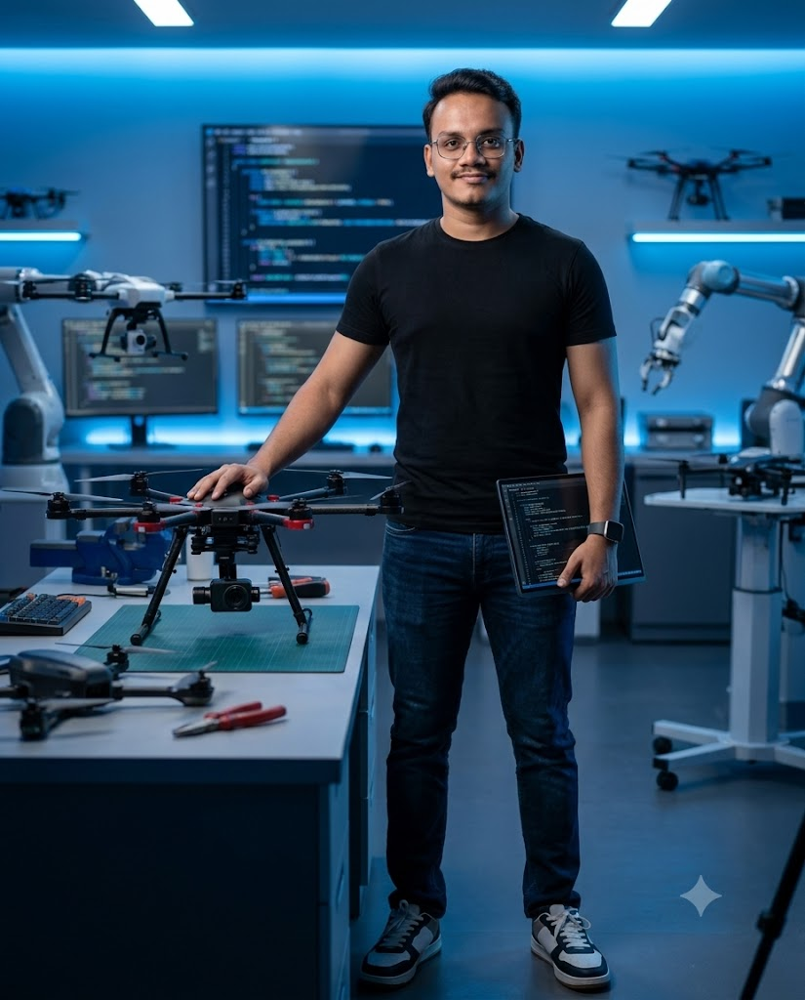
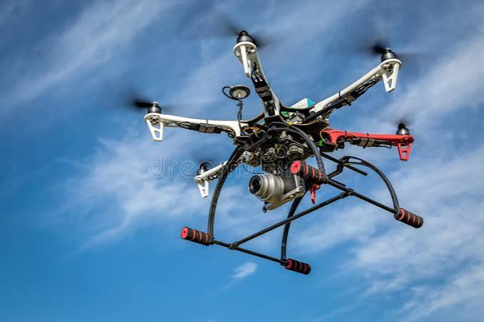
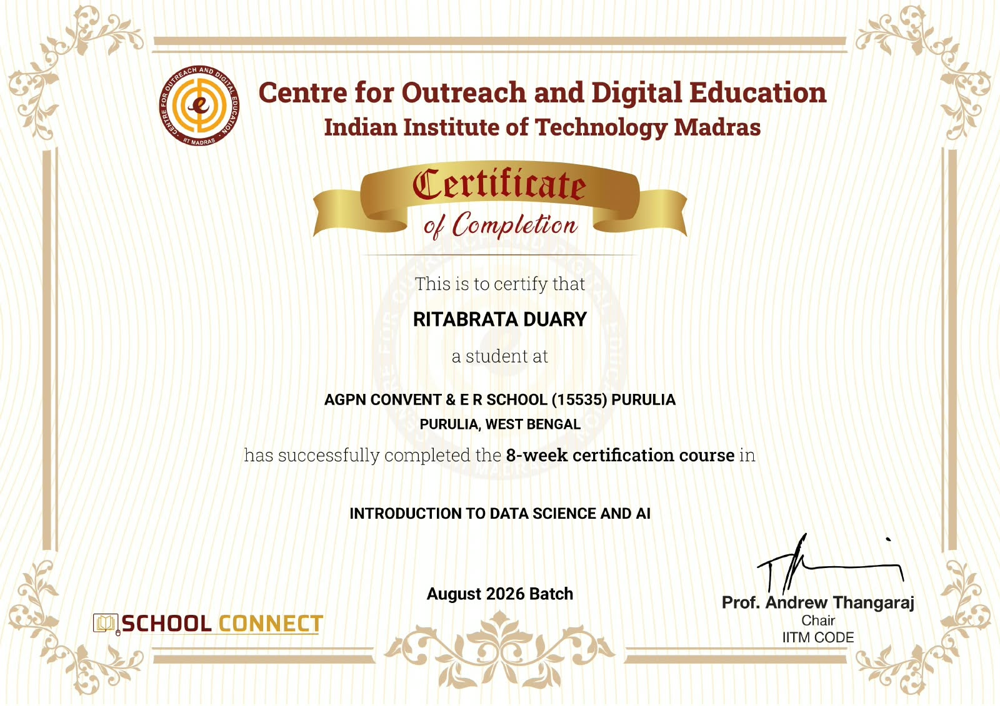

AI & Data Science
Python workflows, data analysis, machine-learning fundamentals, prompt engineering and AI-assisted applications.
INITIALIZING PORTFOLIO /// 2026
PRESS ENTER OR SCROLL TO EXPLORE● STUDENT TECHNOLOGIST · PURULIA, INDIA
ENGINEERING IDEAS INTO REALITY
I'm Ritabrata Duary — exploring Artificial Intelligence, UAV systems, digital forensics, embedded engineering and software. I learn by building, testing and taking ideas beyond the screen.
01 / THE PERSON BEHIND THE PROJECTS

I'm a Class XI science student and technology enthusiast who enjoys connecting software with the physical world.
From assembling and troubleshooting multirotor hardware to developing ESP32-based systems and exploring UAV telemetry forensics, my approach is hands-on: understand the system, build a prototype, test it, and improve it.
I'm expanding my foundations in AI, data science, programming and engineering while contributing to technical projects and competitions.
02 / CAPABILITIES & TOOLKIT
A growing toolkit across software, intelligent systems and physical computing.
Python workflows, data analysis, machine-learning fundamentals, prompt engineering and AI-assisted applications.
Exploring drone telemetry, flight-log parsing, evidence integrity, anomaly detection and cyber-physical security.
Microcontroller projects, sensor integration, serial communication, prototyping and multirotor hardware.
Desktop utilities, GUI development, web interfaces, scripting, testing and version control.
Structuring datasets, creating visual summaries and useful automated workflows.
Technology content, visual storytelling, presentation design and video editing.
Skill tags represent areas of hands-on work or learning; proficiency varies by technology and project.
03 / SELECTED BUILDS & EXPLORATIONS
Eight projects across hardware, software, security and creative technology. Status is labelled transparently.
A desktop-oriented investigation workflow for drone flight data: parsing telemetry logs, reconstructing flight behaviour, identifying anomalies and preserving evidence integrity.
EXPLORE GITHUB ↗ESP32 electronics platform concept with TFT interface, rotary encoder, voltage monitoring, PWM and signal-analysis modules.
GITHUB PROFILE ↗Smart agriculture monitoring prototype combining environmental and soil sensing with an OLED display and rule-based feedback.
GITHUB PROFILE ↗
DJI F550 / APM 2.8Multirotor assembly and troubleshooting involving APM 2.8, GPS, BLDC motors, ESCs, power distribution and FPV components. A physical UAV learning platform.
GITHUB PROFILE ↗Personal assistant workflow exploration combining LLM APIs with voice input, audio capture and speech-to-text capabilities.
GITHUB PROFILE ↗Future-facing exploration of intelligent mobility, AI-assisted transport, automation and sustainable infrastructure.
GITHUB PROFILE ↗A responsive platform presenting technical projects, learning milestones and work across multiple domains.
OPEN WEBSITE ↗Short-form video editing, technology explainers, visual presentations and creator experiments for social platforms.
VIEW INSTAGRAM ↗04 / LEARNING IN PUBLIC
Selected for the drone security challenge at IIT Bombay Techfest. Focus: Drone Forensics Toolkit (Objective 1).
Reached finalist stage in the LPU BIC competition.
Successfully completed the 8-week IIT Madras School Connect certification course.
VIEW CERTIFICATE ↗Building academic foundations while exploring programming, AI, robotics, embedded systems and technology creation.
Working with AI, analytics, automation and data-driven problem solving.
05 / MILESTONES & CREDENTIALS
Selected as a finalist.
Selected for the drone security challenge.
8-week certification · August 2026 Batch
VIEW CERTIFICATE ↗
assets/iitm-certificate.jpg06 / START A CONVERSATION
Open to learning opportunities, technical collaborations, project discussions and meaningful connections.
SAY HELLO ↗GITHUB PROFILE ↗